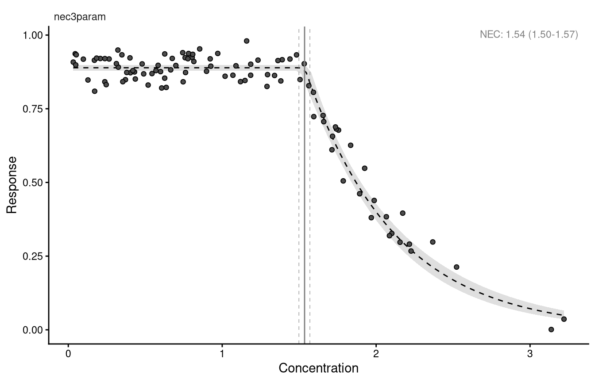

library(bayesnec)
data(nec_data)
head(nec_data) x y
1 1.0187462 0.8602703
2 0.8157475 0.9102426
3 0.3713305 0.8485031
4 0.4008323 0.9226047
5 1.2945451 0.8657107
6 1.3897943 0.9163264One concentration-response model in bayesnec, start to finish
bayesnec fits concentration-response curves to toxicity data and derives no-effect concentration (NEC), no-significant-effect concentration (NSEC, Fisher and Fox (2023)) and effect concentration (ECx) estimates from non-linear models fitted by Bayesian Hamiltonian Monte Carlo, via brms (Bürkner 2017; Bürkner 2018) and Stan. It is an extension of jagsNEC (Fisher et al. 2020).
This module fits one model to one dataset and works through everything that can be done with the result: checking that it converged, looking inside the fitted object, plotting it, and extracting toxicity estimates. Later modules cover the full model set, model averaging, the choice of statistical distribution, and priors.
If you have not yet installed R, a C++ compiler, CmdStan and bayesnec, work through the software setup first. Nothing in this module will run without them.
bayesnec supplies a small example dataset, nec_data, with two columns: x, the concentration, and y, the response.
x y
1 1.0187462 0.8602703
2 0.8157475 0.9102426
3 0.3713305 0.8485031
4 0.4008323 0.9226047
5 1.2945451 0.8657107
6 1.3897943 0.9163264The response here is a proportion bounded by zero and one, which matters for the statistical distribution used to model it. bayesnec will choose a distribution from the characteristics of the data unless told otherwise, and module 5 covers that choice in full.
A Bayesian model is fitted by drawing samples, so running the same code twice gives slightly different numbers unless the random number generator is set to a known state. set.seed() does that, and every fit in this course is preceded by one.
The estimates below will not match yours to the last decimal place unless you use the same seed, the same number of chains and the same version of the package. They should match to within the width of the credible intervals, and if they do not, that is worth investigating rather than accepting.
bnec functionbnec is the working function of the package. It assembles the non-linear model formula, generates priors and initial values, and calls brms. It is designed for an R user who is comfortable with model-fitting syntax but is not a specialist in non-linear or Bayesian modelling.
Run ?bnec for the full argument list. Beyond the formula and the data, the arguments fall into four groups: the model or model set to fit (model); how toxicity estimates are computed from the fit (x_range, resolution, sig_val); how the response and predictor are identified when the formula alone is not enough (x_var, y_var, trials_var); and how priors are set (prior, prior_type).
Anything else is passed through to brms::brm() by ..., so the full brm argument list is available. Three brm arguments are worth knowing about because bayesnec sets them differently from brms. It generates its own family and prior values rather than using the brms defaults, and it raises the number of iterations from 2,000 to 10,000, with a correspondingly longer warm-up, because the non-linear models here often need it.
A bayesnec formula takes the form:
The left-hand side is the response, exactly as in brms. The right-hand side uses crf(), a function specific to bayesnec, which stands for concentration-response function. It takes the predictor and the name of the model to fit, and it accepts a transformation of the predictor, such as crf(log(x), ...).
Term names must match the columns of the data frame exactly, as in any R formula.
The available models are:
[1] "nec3param" "nec4param" "nechorme" "nechorme4"
[5] "necsigm" "neclin" "neclinhorme" "nechormepwr"
[9] "nechorme4pwr" "nechormepwr01" "ecxlin" "ecxexp"
[13] "ecxsigm" "ecx4param" "ecxwb1" "ecxwb2"
[17] "ecxwb1p3" "ecxwb2p3" "ecxll5" "ecxll4"
[21] "ecxll3" "ecxhormebc4" "ecxhormebc5" These fall into named groups, which is how a set of models is requested rather than a single one:
Module 3 describes what each model does and which toxicity estimates follow from it. Module 4 covers fitting a set rather than a single model.
bnecSupplying a formula and a data frame is enough; everything else takes a default.
Finding initial values which allow the response to be fitted using a nec3param model and a beta distribution.Compiling Stan program...Start samplingResponse variable modelled as a nec3param model using a beta distribution.Warning: Found 1 observations with a pareto_k > 0.7 in model 'nec3param'. We
recommend to set 'moment_match = TRUE' in order to perform moment matching for
problematic observations.Warning:
2 (2.0%) p_waic estimates greater than 0.4. We recommend trying loo instead.The first thing that happens is compilation. Stan models are written in the Stan language, translated to C++ and compiled to a shared object, which R then loads and runs. This is why the first fit of a session is slower than later ones, and why a compiler is needed at all.
Sampling follows. How long the whole thing takes depends on the machine, the number of chains and the number of iterations. The fit above took a little over two minutes on four cores.
A model is fitted by running several chains, and those chains are independent of one another until the results are combined. Run in series they wait their turn and the fit takes as long as all of them added together; run in parallel they run at the same time on different processor cores and the fit takes about as long as the slowest one. Setting mc.cores is what allows the second, so use at least as many cores as you have chains:
More cores than chains gives no benefit here, because there is nothing else to run at the same time. There is a second level of parallelism once a set of models is being fitted rather than one — the models can run alongside each other as well as the chains within them — and module 4 covers it.
When the fit completes, bayesnec reports which model was fitted and which statistical distribution was used. Here it is a nec3param model with a beta distribution.
Warnings may also appear. The two above concern the Pareto k diagnostic and p_waic, both of which relate to the leave-one-out cross-validation used to compute model weights. Weights are irrelevant when a single model has been fitted, and module 4 returns to them when they are not.
A fitted model is expensive to produce and cheap to store, so save it as soon as it finishes.
Be deliberate about where. This is one of the smallest fits in the course and the object is 5.2 Mb, because it stores every posterior draw for every parameter. A model-averaged set of all 23 models is very much larger, and a fit to real data with a grouping variable larger again. A folder synchronised by OneDrive or a similar service is a poor choice: the upload is slow, and on some configurations it interferes with writing the file at all.
Object of class bayesnecfit containing the nec3param model
Family: beta
Links: mu = identity
Formula: y ~ top * exp(-exp(beta) * (x - nec) * step(x - nec))
top ~ 1
beta ~ 1
nec ~ 1
Data: data (Number of observations: 100)
Draws: 4 chains, each with iter = 10000; warmup = 8000; thin = 1;
total post-warmup draws = 8000
Regression Coefficients:
Estimate Est.Error l-95% CI u-95% CI Rhat Bulk_ESS Tail_ESS
top 0.89 0.00 0.88 0.90 1.00 6786 5107
beta 0.54 0.06 0.42 0.65 1.00 5364 5147
nec 1.54 0.02 1.50 1.57 1.00 5592 4618
Further Distributional Parameters:
Estimate Est.Error l-95% CI u-95% CI Rhat Bulk_ESS Tail_ESS
phi 52.00 7.44 38.84 68.17 1.00 6368 5474
Draws were sampled using sampling(NUTS). For each parameter, Bulk_ESS
and Tail_ESS are effective sample size measures, and Rhat is the potential
scale reduction factor on split chains (at convergence, Rhat = 1).
Estimate Q2.5 Q97.5
NEC 1.54 1.50 1.57
Bayesian R2 estimates:
Estimate Est.Error Q2.5 Q97.5
R2 0.96 0.00 0.96 0.97There is a lot here, and each part is worth reading.
The object is of class bayesnecfit, containing the nec3param model. bayesnec returns a bayesnecfit when one model is fitted, and a bayesmanecfit when a set is fitted.
The family is the beta distribution with an identity link. This is deliberate and it is not the brms default, which for a beta response is the logit. bayesnec uses the identity link for every family, so that the top, bot and nec parameters stay on the scale of the response and remain directly interpretable. It matters if you ever compare a bayesnec fit against a brm model you have written yourself: unless you pass the link explicitly, the two are different models.
The brms formula that was actually fitted is printed. For nec3param it is a constant top until the concentration reaches nec, followed by exponential decay, with the switch implemented by step(). Module 3 sets out the equations.
Rhat is a convergence diagnostic and should be close to 1. All three parameters here are at 1.00, and the effective sample sizes are in the thousands, both of which indicate the sampler explored the posterior properly.
The NEC estimate is given below the coefficients, as a median with a 95% credible interval, and the Bayesian R² gives an indication of fit. The value here is high, as you would expect of a simulated example where the curve is well-determined; real data rarely look this tidy.
brms offers a range of diagnostics, and the brms documentation covers them far better than this course can. Extract the underlying model with pull_brmsfit():
Plotting it gives the marginal posterior of each parameter beside its trace:
Read the traces from left to right. Four chains that overlap, with no drift and no sustained excursion, indicate the chains have converged on the same distribution. Chains that separate into bands, or wander, indicate they have not, and the estimates should not be used.
A bayesnecfit is a list holding the brms fit and a set of derived quantities.
[1] "fit" "model" "init" "bayesnecformula"
[5] "pred_vals" "top" "beta" "ne"
[9] "f" "bot" "d" "slope"
[13] "ec50" "dispersion" "predicted_y" "residuals"
[17] "ne_posterior" "ne_type" pred_vals holds fitted values across the range of the predictor, which is what the plotting methods use and what you would use for a custom figure:
x Estimate Q2.5 Q97.5
1 0.03234801 0.8890694 0.8787696 0.8984862
2 0.03553938 0.8890694 0.8787696 0.8984862
3 0.03873074 0.8890694 0.8787696 0.8984862
4 0.04192210 0.8890694 0.8787696 0.8984862
5 0.04511347 0.8890694 0.8787696 0.8984862
6 0.04830483 0.8890694 0.8787696 0.8984862Every fitted model carries a posterior for the no-effect estimate, in ne_posterior, with ne_type recording what kind of estimate it is. For models in the nec group this is the posterior of the nec parameter itself. For models in the ecx group, which have no threshold parameter, it is the posterior of the NSEC (Fisher and Fox 2023). Module 3 explains why those are different things.
plot() extends the base method and autoplot() extends the ggplot2 method. Both take arguments controlling what is drawn; see ?autoplot.bayesnecfit.
Ignoring unknown labels:
• fill : "NA"
• colour : "NA"
The result is a ggplot object, so it composes with + in the usual way, and most ggplot2 functions will work on it.
By default the plot is annotated with the fitted no-effect estimate and its 95% credible interval, and labelled with the model that was fitted. The annotation is labelled N(S)EC, because the same plotting code serves both model groups. For a nec3param fit the quantity is an NEC, and it is worth relabelling it as such in anything you present.
Three functions extract estimates from a fitted model: ecx(), nec() and nsec().
Q50 Q2.5 Q97.5
1.596415 1.564697 1.627441
attr(,"resolution")
[1] 200
attr(,"ecx_val")
[1] 10
attr(,"toxicity_estimate")
[1] "ecx" Q50 Q2.5 Q97.5
1.535122 1.498373 1.569592
attr(,"toxicity_estimate")
[1] "nec"Warning: The nec3param curve does not fall below the control's 0.01 quantile
anywhere in the predictor range for 80 of 8000 draws, which return NA. The NSEC
is censored above 3.22. Q50 Q2.5 Q97.5
1.542553 1.507039 1.575130
attr(,"resolution")
[1] 200
attr(,"sig_val")
[1] 0.01
attr(,"toxicity_estimate")
[1] "nsec"
attr(,"ecnsec_relativeP")
50% 2.5% 97.5%
1.3447033 0.1883934 2.3786853 Each returns a median and a 95% probability interval by default, and each records how it was computed in the attributes of the returned object: ecx() returns an EC10 unless told otherwise, and nsec() uses a significance value of 0.01.
For this dataset the three estimates are close together, which happens when the curve declines sharply from a well-defined threshold. They are not interchangeable, and on other data they separate widely. Module 3 covers what each of them measures and when each is appropriate.